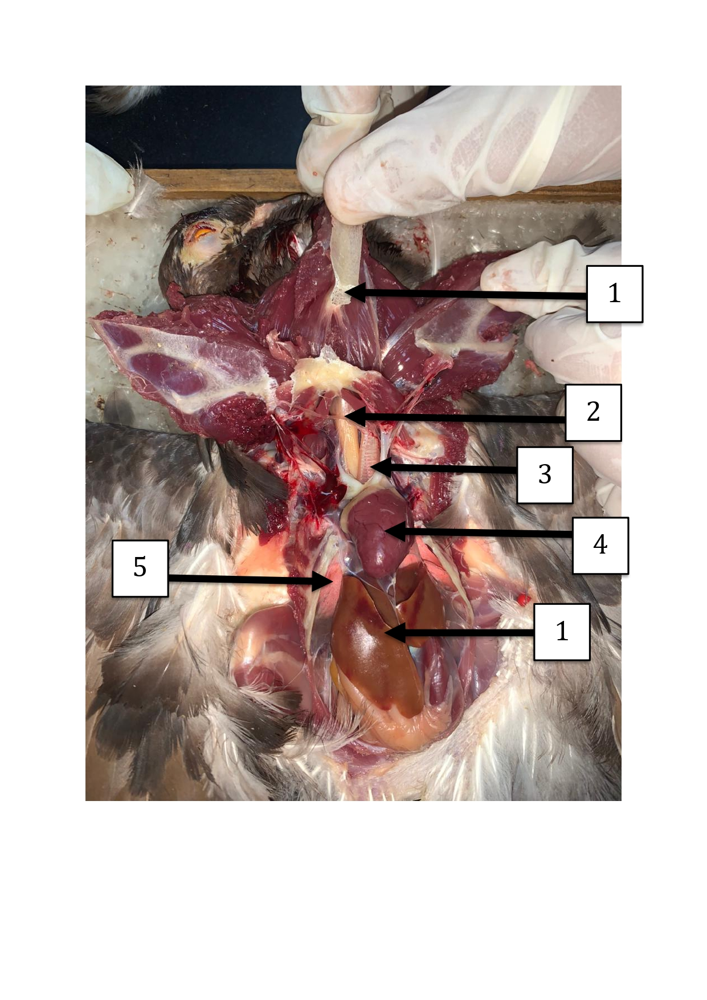
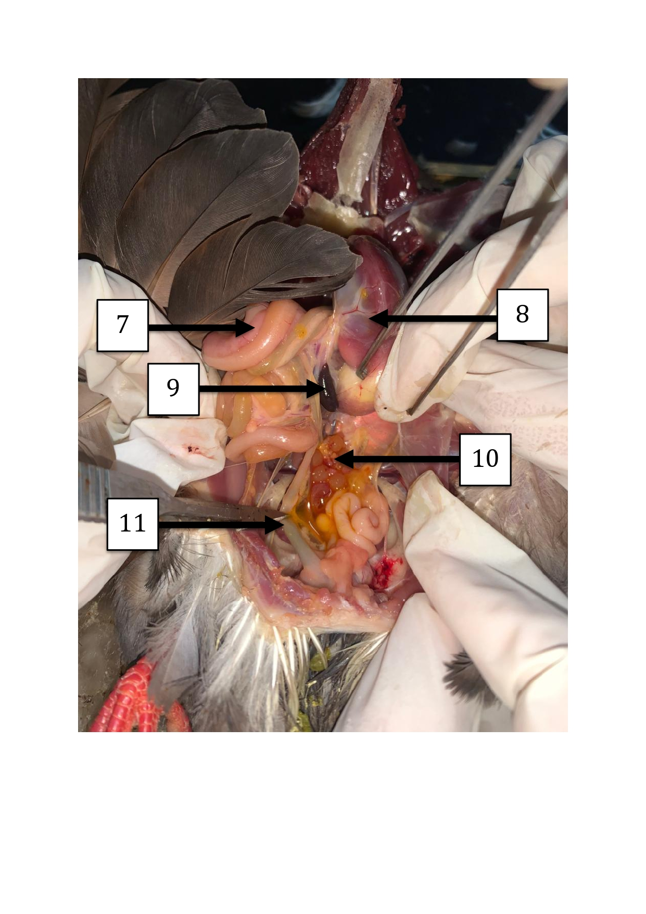

Columba livia
Burung dara (Columba livia) merupakan spesies burung dari famili Columbidae yang tersebar luas di berbagai wilayah dunia. Burung ini memiliki tubuh yang relatif ramping, sayap kuat untuk terbang, serta kemampuan navigasi yang baik sehingga sering dimanfaatkan sebagai burung pos pada masa lalu. Columba livia termasuk hewan vertebrata, homoioterm (berdarah panas), dan ovipar (bertelur). Sistem tubuhnya telah beradaptasi untuk terbang, ditandai dengan adanya tulang berongga, kantung udara, serta otot dada yang berkembang baik. Selain berperan dalam ekosistem sebagai penyebar biji, burung dara juga banyak digunakan sebagai objek penelitian dan praktikum anatomi karena struktur organ tubuhnya mewakili karakteristik umum kelas Aves.
Pengamatan topografi visceral dan morfologi luar burung dara betina 2 dibagi menjadi tiga area fokus utama dokumentasi: peninjauan karakteristik struktur eksternal (sebelum dibedah), pengamatan wilayah toraks anterior pasca-insisi (foto setelah dibedah 1), serta identifikasi traktus digestif intestinal dan folikel genital internal (foto setelah dibedah 2).
Dokumentasi adaptasi morfologi luar spesimen Columba livia utuh yang mendukung aerodinamika, lokomosi, dan sistem sensorik.

Tampilan topografi visceral bagian dada hingga leher, menonjolkan visualisasi organ sirkulasi, respirasi, dan konduksi pakan atas.

Tampilan traktus digestif bawah di rongga abdomen beserta diferensiasi organ reproduksi unilateral khusus betina.

Rincian deskripsi fungsional biologis dari organ-organ internal penting pada spesimen burung dara betina 2.
Sistem modifikasi skeleton khusus aves di mana bagian dalam matriks tulang memiliki rongga berisi udara. Struktur ini terkoneksi dengan kantung udara pernapasan untuk mereduksi densitas dan berat massa tubuh total secara signifikan saat mengangkasa.
Saluran pencernaan bermukosa licin elastis yang berfungsi menyalurkan material makanan pasca-ingesti dari faring kranial menuju proventrikulus tanpa ada proses pencernaan enzimatis yang dominan.
Saluran respiratorik tubular panjang berlapis gelang kartilago penuh hialin penahan kolaps. Berfungsi mengalirkan udara inspirasi menuju bronkus paru-paru sekaligus membersihkan debu mikro yang terbawa.
Pusat hemodinamik muskular berdinding tebal yang terbagi sempurna atas 4 ruang kavitasi. Berfungsi memisahkan secara total sirkulasi darah bersih kaya O₂ dari paru-paru ke seluruh tubuh dengan darah kotor kaya CO₂.
Organ respirasi sirkular kompak non-elastis yang menempel di kolumna vertebra dorsal. Bekerja sinergis dengan anyaman kapiler darah sebagai lokus difusi pertukaran gas respirasi.
Kelenjar pencernaan metabolik bilobular masif. Memiliki peran krusial dalam mensekresikan cairan empedu guna mengemulsi lipid/lemak, penampung glikogen cadangan, serta mendetoksifikasi metabolit toksik darah.
Traktus gastrointestinal lanjutan berluas permukaan vili melimpah. Berfungsi menyelesaikan hidrolisis kimiawi pakan melalui enzim usus/pankreas serta mengabsorpsi molekul mikronutrien ke dalam sirkulasi mesenterika.
Dikenal sebagai gaster muscularis atau ampela. Struktur lambung posterior berotot polos sirkular super tebal untuk menghancurkan, meremukkan, dan menggiling bijian keras secara mekanis dibantu material grit.
Kapsul limfoid terspesialisasi sirkular dekat empedal. Berfungsi memecah eritrosit eritrositik tua yang rusak, mendaur ulang ion besi, serta mematangkan diferensiasi limfosit pertahanan imun tubuh.
Kumpulan kluster sel telur dalam beraneka gradasi ukuran pematangan yolk di sisi kiri rongga pelvis. Berfungsi mematangkan ovum makroleasital sebelum diovulasikan ke corong infundibulum.
Saluran berotot panjang tempat disekresikannya komponen telur pelengkap secara sekuensial: deposisi putih telur (albumen) di magnum, membran selaput di istmus, serta cangkang zat kapur keras pelindung di bagian uterus bawah.